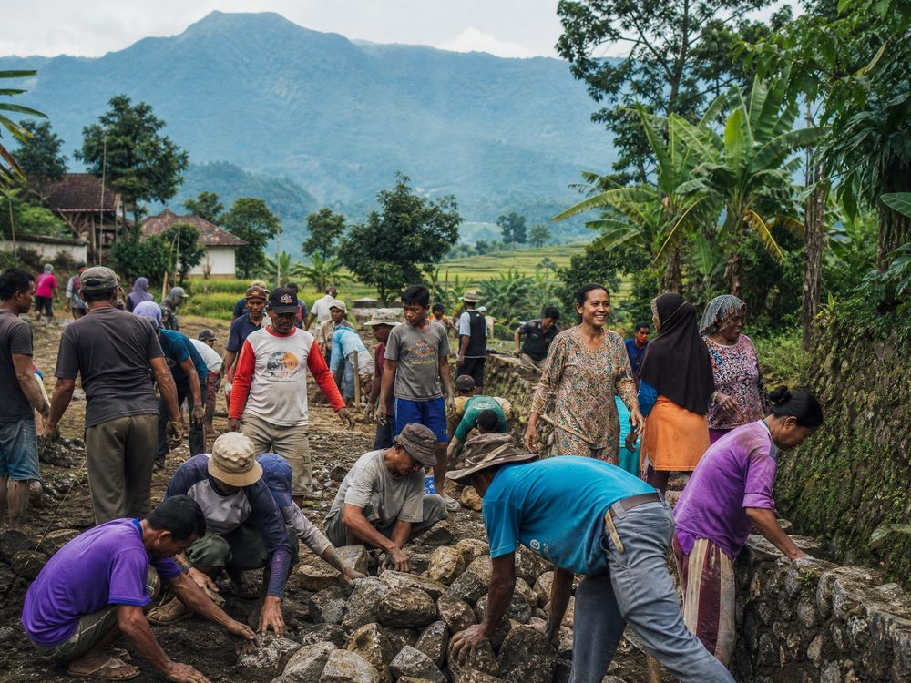

Dusun di Desa Kentengsari
Wilayah Desa Kentengsari terbagi dalam lima dusun yang guyub dan rukun.
Lima Dusun, Satu Kentengsari
Secara administratif, Desa Kentengsari terdiri atas 5 dusun dengan 8 RT dan 2 RW yang dihuni 309 jiwa dari 92 kepala keluarga.
Dusun Krajan 1
Bagian dari kawasan Krajan yang menjadi salah satu pusat permukiman dan kegiatan warga desa.
Dusun Krajan 2
Kawasan permukiman yang berdampingan dengan lahan pertanian produktif warga.
Dusun Krajan 3
Dusun dengan suasana khas pedesaan dan masyarakat yang menjunjung gotong royong.
Dusun Kenteng Wetan
Terletak di sisi timur wilayah desa, mewarisi nama desa pendahulu — Kenteng.
Dusun Nglarangan
Kawasan di tepi wilayah desa dengan panorama alam lereng Sumbing yang memukau.
8 RT / 2 RW
Kelima dusun terbagi dalam 8 Rukun Tetangga dan 2 Rukun Warga sebagai unit terkecil pemerintahan.
Guyub Rukun di Setiap Dusun
Meski terbagi dalam lima dusun, masyarakat Kentengsari hidup dalam satu kesatuan adat dan budaya. Kegiatan gotong royong, kerja bakti, dan acara dusun menjadi perekat kebersamaan warga — dari Krajan hingga Nglarangan.
Lihat Dokumentasi Kegiatan